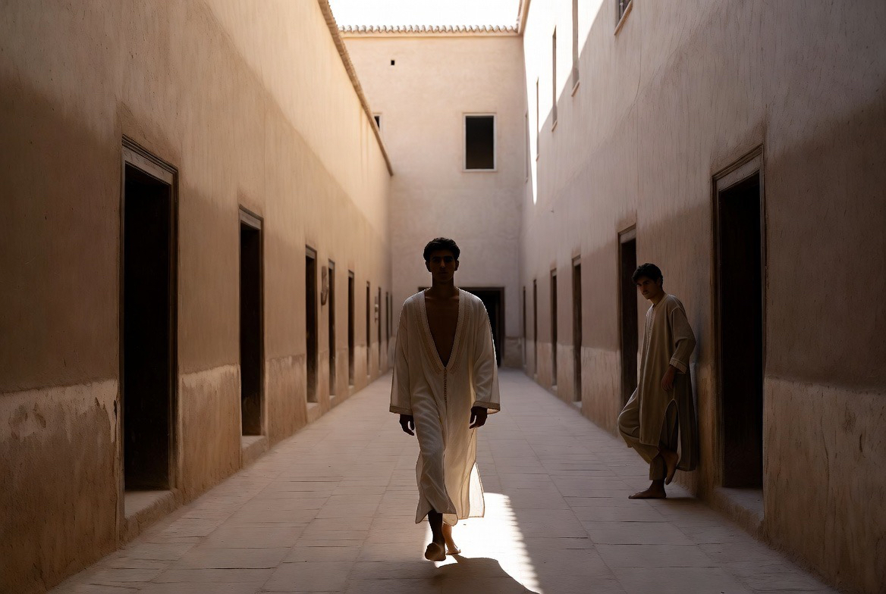
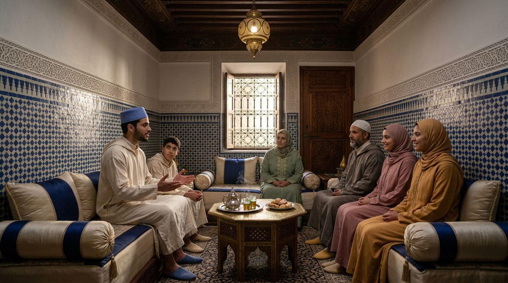
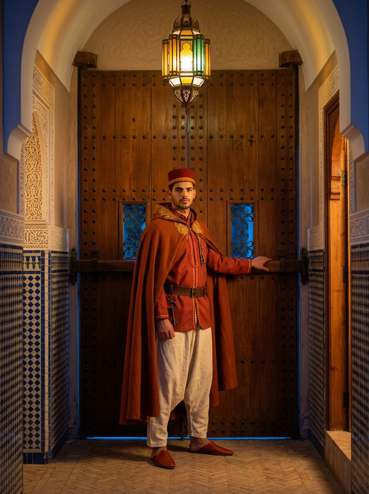
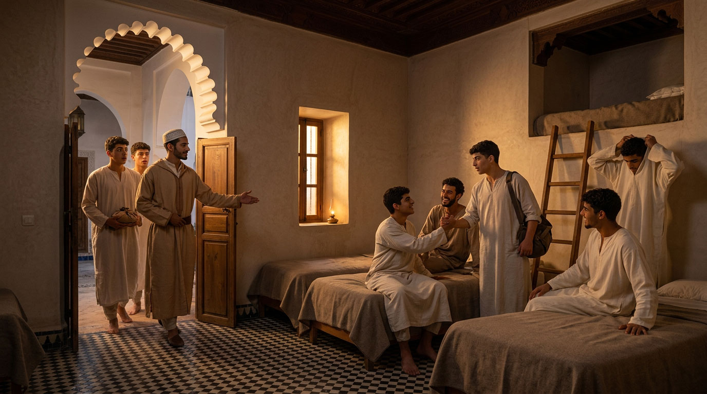

Les espaces intérieurs
Du seuil aux chambres — comment la maison se ferme, et à qui elle s'ouvre.

Une maison se comprend à sa porte. Le riad ne s'ouvre pas sur la rue : il s'en détourne. Façades aveugles, une seule porte, et derrière elle un vestibule coudé — la driba — qui empêche le regard d'atteindre la cour. Ce n'est pas une précaution ajoutée après coup : c'est la première décision d'architecture, celle dont toutes les autres découlent.
Ce que ce coude protège n'est pas un secret. C'est la possibilité, pour ceux qui vivent là, d'être réellement chez eux — de traverser la cour à l'aube, de travailler, de prier, de se taire, sans être vus de qui passe dans le derb.
Une porte qui demande la permission
Le seuil — l'ʿataba — n'est pas dans la tradition islamique une simple limite de propriété. Le Coran en fait l'objet d'une règle précise, et cette règle contient, presque littéralement, le nom de cette maison :
يَا أَيُّهَا الَّذِينَ آمَنُوا لَا تَدْخُلُوا بُيُوتًا غَيْرَ بُيُوتِكُمْ حَتَّىٰ تَسْتَأْنِسُوا وَتُسَلِّمُوا عَلَىٰ أَهْلِهَا
« Ô vous qui croyez, n'entrez pas dans des maisons autres que les vôtres avant de vous être annoncés et d'avoir salué ceux qui les habitent. »
— Coran, sourate An-Nūr (XXIV), 27
Le verbe employé, tastaʾnisū, vient de la racine ʾ-n-s — celle-là même qui donne al-uns, l'intimité cordiale dont la maison porte le nom. Annoncer sa présence avant d'entrer, c'est donc, dans la langue du texte, chercher à se rendre familier : demander à être reçu plutôt que se glisser à l'intérieur. La tradition exégétique nomme ce geste l'istiʾdhān, la demande de permission.
Le dispositif décrit ci-dessous n'est rien d'autre que la traduction, en pierre et en plâtre, de ce verset. Une maison qui se laisse traverser sans qu'on ait demandé n'est pas une maison hospitalière : c'est une maison qui n'appartient plus à personne.

Les trois parloirs
Sur la driba, avant le coude, s'ouvrent trois petites pièces d'une dizaine de mètres carrés : les parloirs. C'est là — et là seulement — que la maison reçoit ce qui vient du dehors. Les mères et les sœurs des résidents, les familles venues voir où vit leur fils, les fournisseurs, les visiteurs de passage : tous sont accueillis au parloir, aucun ne va au-delà.
Trois pièces plutôt qu'une seule salle, pour une raison simple : trois conversations peuvent s'y tenir en même temps sans que personne n'entende celle du voisin, et il n'y a pourtant qu'un seul seuil à tenir. C'est la disposition des couvents et des madrasas, et elle a fait ses preuves.
Chaque parloir dispose de son point d'eau et de ses commodités propres. Le détail paraît mineur ; il décide de tout. Une visite qui dure deux heures finira toujours par avoir besoin de quelque chose, et si ce quelque chose se trouve à l'intérieur, la règle cède dès le premier jour — avec la meilleure justification du monde. Aucune fenêtre ne donne sur le patio, et le son a été pris en compte autant que le regard : une cour marocaine porte les voix partout.
Ces trois pièces reçoivent le meilleur de ce que la maison sait faire — plâtre sculpté, zellige, assise basse, lumière juste. Non par ostentation : parce qu'elles sont la seule partie de la maison qu'une mère verra jamais, et que le jugement qu'elle portera sur l'ensemble se formera là, dans cette pièce et nulle part ailleurs.
Deux portes qui ne s'ouvrent jamais ensemble
Entre le derb et la maison, le passage se fait par un sas. Le visiteur entre par la porte de la rue, le résident rejoint le parloir par celle du riad, et les deux ne sont jamais ouvertes au même instant. La commande reste du côté de la maison. Sans ce dispositif, le parloir ne serait qu'une pièce située près de l'entrée — c'est-à-dire rien.


Après l'ʿishāʾ, la porte de la maison est close.
Le bawwab
Le seuil demande un homme, et cet homme est un résident comme les autres — du même âge que ceux qui vivent là, engagé dans la même règle. Sa charge est la porte : c'est par ce travail qu'il tient sa place dans la maison, comme un autre tient la sienne au métier à tisser ou au ciseau. Il ne s'agit pas d'un poste d'appoint mais d'un service à part entière, et ce service vaut son logement, sa table et sa formation.
La fonction demande aussi un corps. Tenir une porte, c'est parfois tenir tête : une tentative d'intrusion, un homme éconduit qui insiste, une nuit agitée dans le derb. Le bawwāb est donc choisi parmi les résidents les plus avancés dans les disciplines du corps — musāraʿa, taḥṭīb, zūrkhāne — non pour intimider qui se présente, mais parce qu'un homme sûr de sa force n'a pas besoin d'élever la voix. La futuwwa tient précisément dans cette mesure : contenir sa propre force plutôt que la déployer.
Sa chambre est la première du dortoir, celle qui touche au seuil. Il dort parmi les autres et non à la porte : il est de la maison, et c'est ce qui le distingue d'un gardien.
La porte est servie du fajr à l'ʿishāʾ. En dehors de ces heures, elle n'est pas surveillée : elle est fermée. Une porte de riad s'est toujours fermée à la nuit, et la maison ne fait ici que reprendre un usage qui la précède de plusieurs siècles.

Le dortoir et les chambres
Marrakech possède le modèle à quelques rues d'ici. La madrasa Ben Youssef a logé pendant quatre siècles les étudiants de la ville dans plus de cent chambres minuscules, distribuées autour de petites cours sur deux étages. Quelques mètres carrés chacune, une fenêtre, rien de plus.
Cette petitesse n'était pas une pauvreté de moyens : c'était un choix. Une chambre vaste retient celui qui l'occupe et vide les espaces communs. Une chambre étroite le rend au patio, à l'atelier, à la table et à la prière — c'est-à-dire aux autres. La chambre sert au sommeil, à l'étude et à la prière seule ; le reste de la vie se tient ailleurs, et doit s'y tenir.
On n'y arrive pas d'emblée. Les premiers temps se passent en chambrée : quelques lits alignés dans une même pièce, les nouveaux venus mêlés à ceux qui ne les précèdent que de peu. Les stagiaires de passage y logent également, le temps de leur séjour. Rien ne s'apprend mieux qu'à cet endroit — supporter les autres de près, se lever sans réveiller personne, tenir sa part d'une pièce qui n'est à personne.
La chambre personnelle vient plus tard, avec le troisième grade de la ḥizām al-itqān, celui qui marque l'approche de la maîtrise. Elle n'est pas un privilège mais une charge de plus : on ne confie une porte qu'à celui dont on sait déjà l'usage qu'il en fera. Dortoir désigne donc ici l'aile entière — la chambrée et les cellules ensemble, les deux moments d'un même chemin.
L'entretien de la chambre revient à celui qui l'habite. C'est la première des tâches communes, et la seule qui ne se délègue jamais.
Les termes de cette page sont réunis dans le glossaire de la maison.